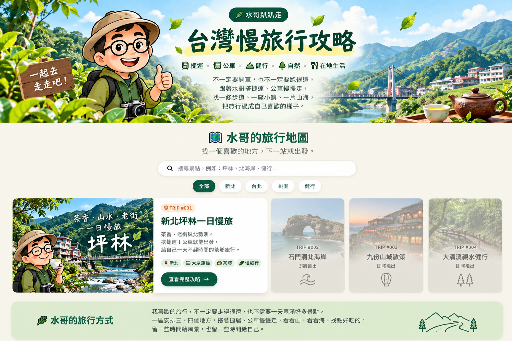

🗺️ 水哥的旅行地圖
找一個喜歡的地方，下一站就出發。
🚶 下一站，去哪裡？
北海岸、九份、親山步道、捷運小旅行…… 水哥會繼續把實用交通、散步路線與旅行心得 一篇一篇整理進來。
🌊 石門洞北海岸 🏮 九份山城 🌿 大溝溪 🌾 草嶺古道
❤️ 水哥的旅行方式
我喜歡的旅行，不一定要走得很遠， 也不需要一天塞滿好多景點。 一區安排三、四個地方， 搭著捷運、公車慢慢走， 看看山、看看海、找點好吃的， 留一些時間給風景，也留一些時間給自己。
不一定要開車，也不一定要跑很遠。
跟著水哥搭捷運、公車慢慢走，
找一條步道、一座小鎮、一片山海，
把旅行過成自己喜歡的樣子。
找一個喜歡的地方，下一站就出發。

北海岸、九份、親山步道、捷運小旅行…… 水哥會繼續把實用交通、散步路線與旅行心得 一篇一篇整理進來。
🌊 石門洞北海岸 🏮 九份山城 🌿 大溝溪 🌾 草嶺古道
我喜歡的旅行，不一定要走得很遠， 也不需要一天塞滿好多景點。 一區安排三、四個地方， 搭著捷運、公車慢慢走， 看看山、看看海、找點好吃的， 留一些時間給風景，也留一些時間給自己。